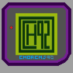

¡Hola a todos! Soy Jorge,
aunque muchos me conocen como Chorchs.
En este rincón voy a compartir mis cuentos,
el universo de Temallum, mis juegos
y todo lo que nace de mi lado creativo.
También vas a encontrar acceso a mis redes
y una sección de contacto para mis servicios técnicos.
¡Que tengas una gran estadía!
 Servicio tecnico de pc
Servicio tecnico de pc